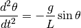
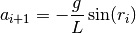
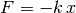
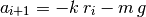

Proyectos para el segundo corte¶
Como proyectos finales para este corte vamos a simular tres movimientos diferentes:
1. El péndulo¶
La ecuación que define el movimiento de un péndulo está dada por

donde  es el ángulo que se forma entre el péndulo y la vertical,
y
es el ángulo que se forma entre el péndulo y la vertical,
y  es la longitud del péndulo.
es la longitud del péndulo.
Para simular su movimiento vamos a integrar esta ecuación usando el método de Verlet que se definió en secciones pasadas. Esto quiere decir que la fórmula para calcular la aceleración del péndulo estará dada por:

donde  es en este caso la posición del objeto, y viene dada por el
ángulo que éste forma con la vertical.
es en este caso la posición del objeto, y viene dada por el
ángulo que éste forma con la vertical.
Nota
Las ecuaciones con que se calculan la nueva posición y la nueva velocidad no se modifican.
Según esto, desarrollar un programa que simule el movimiento del péndulo, de la siguiente forma:
Definir una constante L que sirva para guardar la longitud del péndulo.
Definir la posición inicial p0 no como cero sino como un ángulo dado. Por ejemplo, para hacer que el péndulo arranque a 40° de la vertical, definir p0 como:
import math math.radians(40)
Usar el programa con el que se calculó el método de Verlet para la caída de una bola, quitándole el choque contra el piso y la fuerza de arrastre. Cambiar el cálculo de la nueva aceleración por la ecuación dada arriba.
Con plt.plot generar una gráfica de la posición vs. el tiempo. A qué corresponde?
Generar una animación del movimiento con VPython, por medio de estos pasos:
Representar el eje alrededor del cual gira el péndulo con una esfera:
eje = vis.sphere(pos=(0, 0, 0), radius=0.5, color=vis.color.yellow)
Calcular la posición inicial en el plano
 desde la que parte
el péndulo como:
desde la que parte
el péndulo como:pos_inicial = (L * math.sin(posiciones[0]), -L * math.cos(posiciones[0]), 0)
Representar el péndulo como una esfera cuyo centro se encuentra en la posición inicial:
pendulo = vis.sphere(pos=pos_inicial, radius=1, color=vis.color.red)
Representar la cuerda que une el eje con el péndulo como un cilindro:
cuerda = vis.cylinder(pos=(0, 0, 0), axis=pos_inicial, color=vis.color.cyan, radius=0.1)
donde axis indica el punto final hasta el que se extiende el cilindro.
Dentro de un ciclo for actualizar la posición del péndulo y el punto final de la cuerda, con la lista de posiciones.
No olvidar convertir cada elemento de posiciones al plano
de la misma forma en que se hizo para pos_inicial.
2. El resorte¶
La fuerza que actúa sobre un resorte está dada por la Ley de Hooke:

donde  es su elongación, es decir que tanto se ha separado de su
posición de reposo y
es su elongación, es decir que tanto se ha separado de su
posición de reposo y  es una constante que define que tan rígido es un
resorte. Entre mayor sea el resorte es más rígido y por tanto más
difícil de estirar, y entre menor sea, es más blando.
es una constante que define que tan rígido es un
resorte. Entre mayor sea el resorte es más rígido y por tanto más
difícil de estirar, y entre menor sea, es más blando.
Para simular su movimiento vamos a suponer que el resorte está colgado desde el techo por un extremo y por el otro está unido a una masa que se mueve por acción de la gravedad. Según esto, la ecuación para la nueva aceleración estará dada por:

donde  es la masa del objeto que cuelga del resorte y r_{i} es su
elongación, es decir, que tanto se estira por la acción de este objeto. Esta
ecuación es la que debe cambiarse en el método de Verlet calculado en secciones
anteriores, mientras que las ecuaciones para el cálculo de la velocidad y
posición se dejan sin modificar.
es la masa del objeto que cuelga del resorte y r_{i} es su
elongación, es decir, que tanto se estira por la acción de este objeto. Esta
ecuación es la que debe cambiarse en el método de Verlet calculado en secciones
anteriores, mientras que las ecuaciones para el cálculo de la velocidad y
posición se dejan sin modificar.
Según esto, desarrollar un programa que simule el movimiento del resorte, de la siguiente forma:
Definir una constante L0 que sirva para guardar la longitud del resorte.
Definir la posición inicial p0 como cero, lo que implica que el resorte se suelta desde su posición de equilibrio.
Usar el programa con el que se calculó el método de Verlet para la caída de una bola, quitándole el choque contra el piso y la fuerza de arrastre. Cambiar el cálculo de la nueva aceleración por la ecuación dada arriba.
Con plt.plot generar una gráfica de la posición vs. el tiempo. A qué corresponde?
Generar una animación del movimiento con VPython, por medio de estos pasos:
Representar el techo con una caja de la siguiente forma:
techo = vis.box(pos=(0, 10, 0), length=6, height=0.5, width=6, color=vis.color.blue)
Representar el resorte como una espiral de la siguiente forma:
resorte = vis.helix(pos=(0, 10, 0), axis=(0, -L0, 0), color=vis.color.cyan, radius=0.3, thickness=0.2)
donde axis indica el punto final hasta el que se extiende el resorte, y se toma negativo porque apunta hacia abajo.
Representar el objeto que pende del resorte como una caja, así:
objeto = vis.box(pos=(0, 3.75, 0), length=2.5, height=2.5, width=2.5, color=vis.color.red)
Dentro de un ciclo for actualizar la posición de la caja y el punto final de la resorte, con la lista de posiciones.
Para ello es necesario sumarle al centro inicial de la caja (que en este caso es (0, 3.75, 0)) cada uno de los elementos de posiciones y hacer lo mismo para el axis inicial del resorte.
3. Tiro parabólico¶
Seguir para ello las instrucciones de la sección Movimiento en dos dimensiones